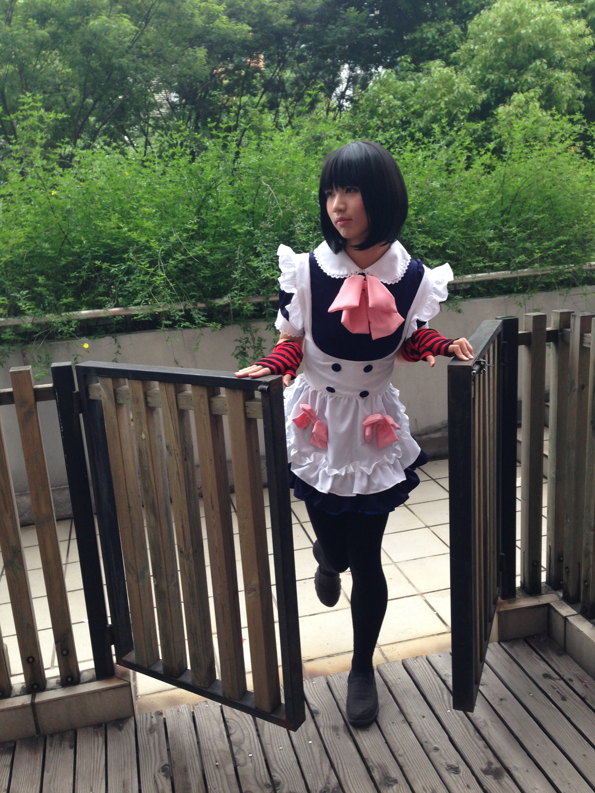
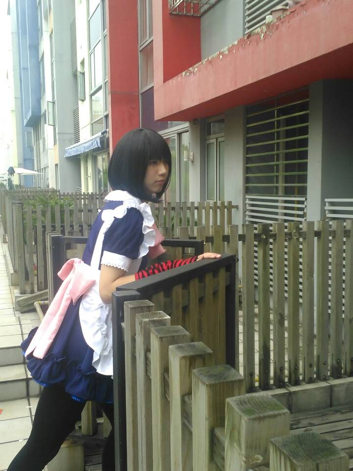

正文:
前几日在朋友圈看到了前同事（现在也在美帝本科）发的照片，是在女仆店打工的时候拍的，突然想起了以前的事情。干脆回答一下。
魔都妹抖记
魔都的女仆咖啡，成熟也就大致三四家。
店名大致也就萌什么，maid 什么的。我以前是对 A 店比较熟悉。很久以前问过一次，不过 A 的人数很多，要求本来就很严格，「可爱的男孩子」不考虑。
还有 B 店，现在有一个偶像组合。在那里唱歌跳舞。然而并不是非常熟悉。
做女仆兼职的，大抵是为了好玩，但全职的，就不太好说。不过魔都整体比广州 X 子好很多，女仆外卖和绳艺都没有（其实后者也不是没有，但广州 X 子已经太过头了）。
去年暑假我在的是一家新开的店。店长是刚毕业的学生，人很不错。当然最后这家店没开下去，转让了。
别的其实也就一般，主要是为了有意思才去的。
说点别的有意思的事情：
在这个店里，认识了：
- 两个同要去美帝本科的妹子。其中一个还是同校。
- @NovaDNG Ummm，这个好玩，他现在在知乎
- @Tomomi Sawako 萌导航创始人。不过当时每次我下班他才下班节奏……
很有意思的是，在北京的那些浮躁大街上的咖啡馆，如果你去观察，都是一群想着互联网各种创业的旁友（当然偶尔也有普通人）。
在上海的话，如果你长期观察女仆咖啡，也会得到有意思的结论。当然大部分人只是普通的宅男，但是仔细想想会发现说不定其中某个胖子就是哪个二次元站的 CEO。拜浪潮所赐，去年暑假就已经有很多人在谈游戏，谈二次元 SNS 等等……
后来讨论二次元相关的东西要么去 costa，要么桌游店；当然最好是女仆咖啡（笑）。
照片 ：

